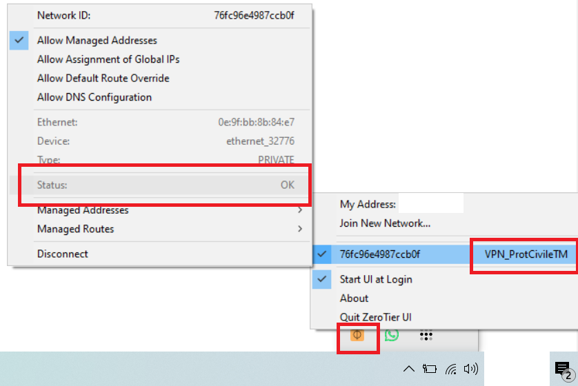
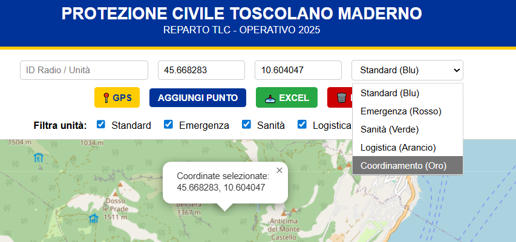
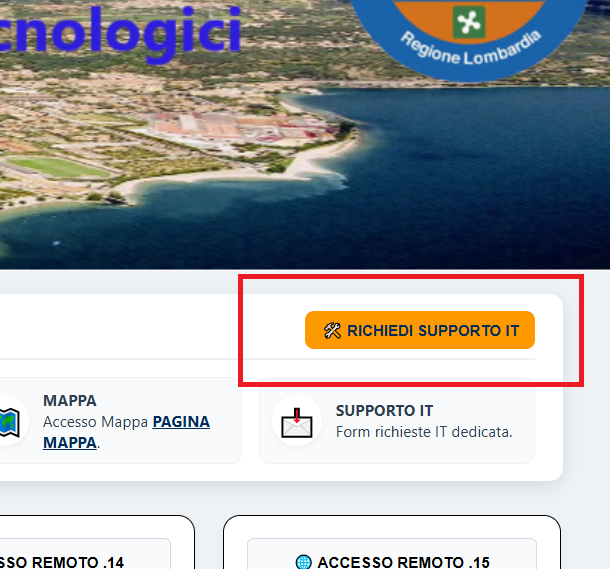

Documentazione tecnica per l'operatività dei sistemi di comunicazione remota.
1. Verifica ZeroTier (VPN Remota)
Verifica la connessione ai dispositivi in VPN, come mostrato nell'immagine sottostante.

2. Verifica Tailscale (VPN Server)
Verifica la connessione attiva al Server della PC per la sincronizzazione degli stati, come mostrato nell'immagine sottostante.

3. Gestione Campo Dati e Radio
Inserire sempre ID/nome operatore. Per la movimentazione del semaforo richiedere sempre il feedback via radio.
4. MAPPA
La mappa ha la funzione di rilevare la posizione GPS del dispositivo PC, ed inserire in varie categorie atre posizioni, è disponibile anche l'esportazione tramite Excel delle coordinate e l'inserimento della posizione desiderata tramite la selezione sulla mappa con il Mouse.

5. Supporto Tecnico HelpIT
Inviare richiesta di malfunzionamento dalla pagina principale tramite l'apposito pulsante.

Informazioni Critiche
- Connessione: In caso di timeout, riavviare il modulo LTE.
- Sicurezza: Credenziali strettamente personali.
- Emergenze: Per guasti/malfunzionamenti GRAVI contattate il Reparto TLC della Protezione Civile di Toscolano Maderno
AVVISO DI SICUREZZA: È vietata la diffusione e visualizzazione al personale non Autorizzato.